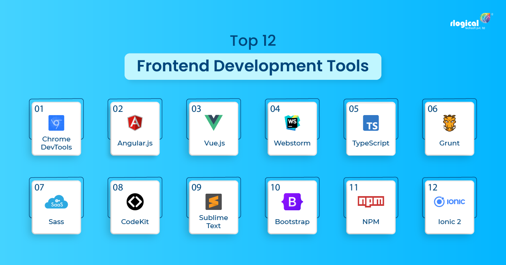
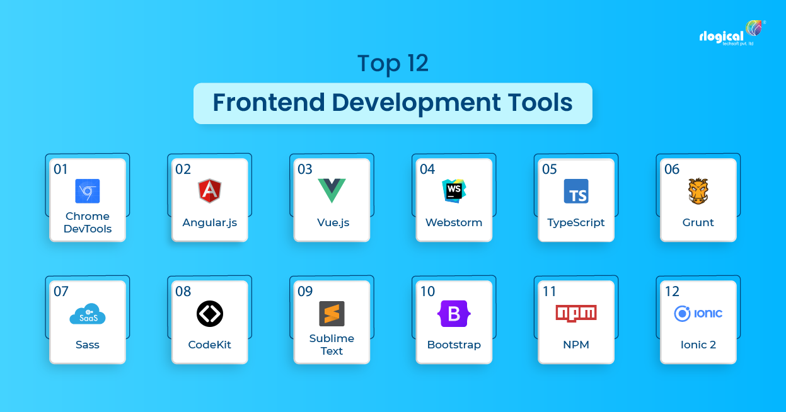

Die Begriffe Frontend und Backend (aus dem Englischen entlehnt, für Vor- bzw. Über- und Unterbau, wörtlich vorderes und hinteres Ende; im Deutschen gebräuchlicher sind zudem der Oberbau und demgegenüber der Unterbau[1][2][3][4]) werden in der Informationstechnik an verschiedenen Stellen in Verbindung mit einer Schichteneinteilung verwendet.
Dabei ist typischerweise das Frontend näher am Benutzer, das Backend näher am System. In manchen Fällen ist diese Interpretation nicht anwendbar, es gilt aber prinzipiell, dass das Frontend näher an der Eingabe und das Backend näher an der Verarbeitung ist.
 
Wikipedia

Wikipedia